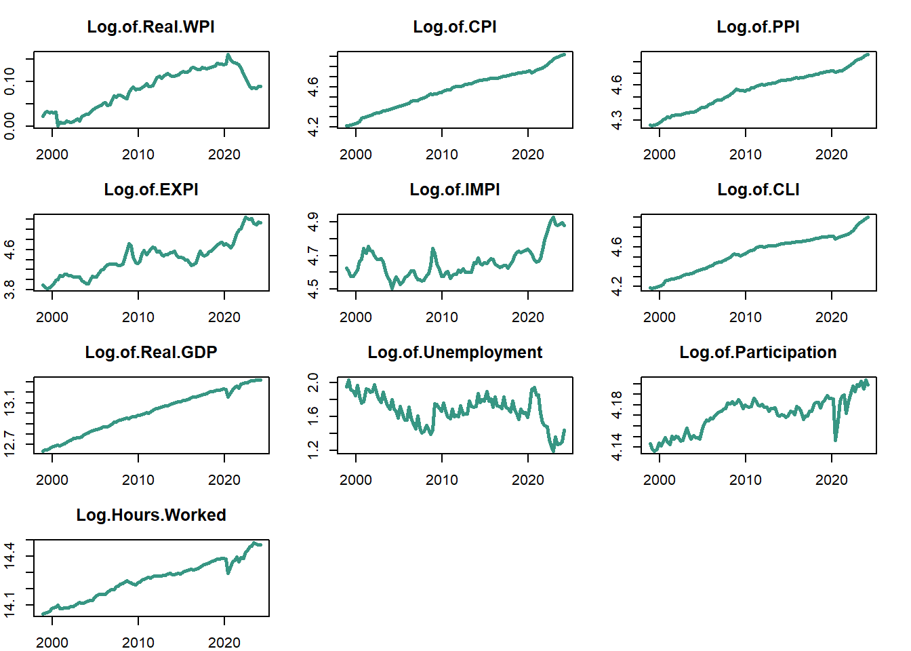
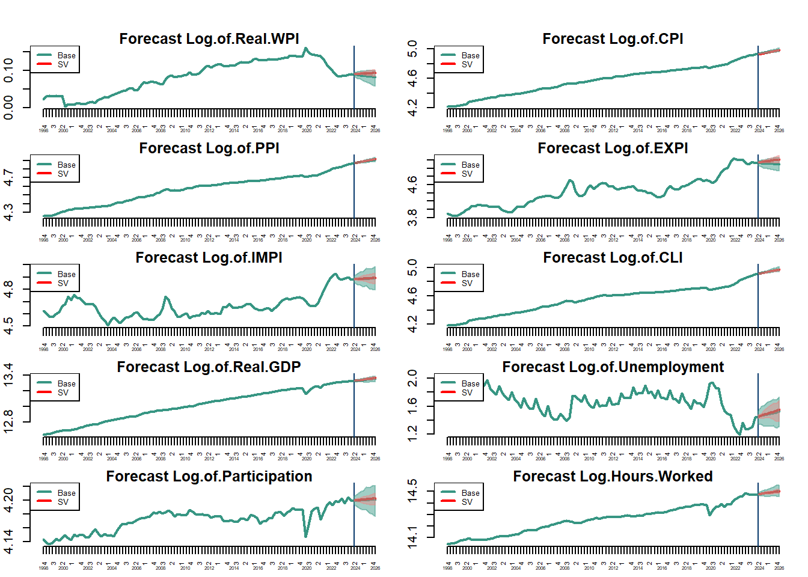

| Date | Log.of.Real.WPI | Log.of.CPI | Log.of.PPI | Log.of.EXPI | Log.of.IMPI | Log.of.CLI | Log.of.Real.GDP | Log.of.Unemployment | Log.of.Participation | Log.Hours.Worked |
|---|---|---|---|---|---|---|---|---|---|---|
| 1998-12-01 | 0.0233247 | 4.216562 | 4.261270 | 3.899950 | 4.624973 | 4.188138 | 12.63974 | 1.954982 | 4.143612 | 14.04566 |
| 1999-03-01 | 0.0305035 | 4.216562 | 4.258446 | 3.860730 | 4.603168 | 4.185099 | 12.64707 | 2.033353 | 4.138270 | 14.04886 |
| 1999-06-01 | 0.0332161 | 4.220977 | 4.261270 | 3.832980 | 4.576771 | 4.188138 | 12.65050 | 1.922737 | 4.136552 | 14.05186 |
| 1999-09-01 | 0.0315212 | 4.229749 | 4.269697 | 3.843744 | 4.575741 | 4.197202 | 12.66185 | 1.897081 | 4.138363 | 14.06279 |
| 1999-12-01 | 0.0327431 | 4.235555 | 4.278054 | 3.885679 | 4.597138 | 4.200205 | 12.67872 | 1.848368 | 4.144279 | 14.07761 |
Forecasting Australian Real Wages
Abstract. This project employs a Bayesian Vector Autoregression (BVAR) model to forecast Australian real wages for future periods. Beginning in 2021, Australian households experienced a shrinkage in real wages. However, recent trends suggest a recovery, leading to an expected upward trend in real wages in the coming periods.
Keywords. BVARs, Real Wages, Inflation, Households
Research Question
How will real wages and the broader economic conditions for households in Australia evolve in the upcoming periods?
Motivation
Accurate forecasting of real wages is imperative for policymakers and businesses as it facilitates the anticipation of shifts in consumer purchasing power, which in turn substantially influences economic demand and inflationary dynamics. Such forecasts are integral to the formulation of monetary and fiscal policies aimed at maintaining economic stability and fostering long-term growth. The rising inflation and consequent escalation in the cost of living have imposed significant strain on Australian households (Reserve Bank of Australia (2024)), compounded by the inability of nominal wage growth to sustain its historical average of approximately 4% since 2013 (Australian Bureau of Statistics (2024)). This stagnation has resulted in a marked decline in real wages, particularly in the aftermath of the COVID-19 pandemic (Australian Treasury (2024)). Notably, there has been a discernible upsurge in real wages since the last quarter. Nevertheless, historical projections by the Reserve Bank of Australia (RBA) have frequently failed to align with actual developments (Reserve Bank of Australia (2017)), highlighting the necessity for a more refined predictive algorithm that can reliably anticipate future stable increases in real wages.
Theory base
Real Wages defined as:
\[ \log Real\:wages = \log Nominal\:wages\:- \log CPI \] # Data
Labor data is retrieved from the Australian Bureau of Statistics (ABS) using the readabs function and the Reserve Bank of Australia (RBA) using readrba.
The ABS releases data on average weekly earnings biannually, in May and December As the latest data is from 4 months ago, we will utilize the Wage Price Index (WPI), which is measured quarterly (last released in December 2023).
Key economic variables are incorporated to understand labor market and economic dynamics. Nominal and Real Wages assess purchasing power and income trends, with real wages adjusted using the Consumer Price Index (CPI) to account for inflation. Producer Prices, reflected by the Producer Price Index (PPI), provide insights into production costs and business environment.Export (EPI) and Import Indexes (IPI) are included to evaluate trade impacts and economic competitiveness. The Cost of Living Index (CLI) assesses consumer expenses, influencing economic welfare. Unemployment and Labor Participation Rates offer perspectives on labor market health and engagement. Log Hours Worked and Log Real GDP are used to analyze productivity trends and overall economic output.
Indicators
Australian Labor and Financial Data
Following indicators will be used in the model. Indicators on global economic factors will be included later in this project.
| Indicator | Index | Source | Unit | Period |
|---|---|---|---|---|
| Real Wages | WPI - CPI | ABS/RBA | % | 1997-2024 |
| Inflation | CPI | ABS | % | 1948-2023 |
| Producer Prices | PPI | ABS | % | 1998-2023 |
| Export Index | EPI | ABS | % | 1998-2023 |
| Import Index | IPI | ABS | % | 1998-2023 |
| Cost of Living | CLI | ABS | % | 1998-2023 |
| Unemployment | UR | RBA | Persons | 1978-2024 |
| Labor Participation | LPR | ABS | % | 1978-2024 |
| Log Hours Worked | HW | RBA | - | 1978-2024 |
| Log Real GDP | Real GDP | RBA | Million AUD | 1959-2023 |
Data extraction and transformation
Since the main indicators are based on quarterly data, all indicators are converted into quarterly time series.
Given that the extracted time series data for the production price index starts in 1998 Q4, this quarter will work as the starting date of the analysis.
Descriptive Analysis
Data Overview
Data Plots
The accompanying graphs depict the recent trends in the selected economic indicators. Notably, the Real Wage Price Index has dropped significantly since the beginning of COVID in March 2020. Concurrently, the Consumer Price Index has exhibited larger growth rates in the same period. Recently, a slight upward trend in Real Wages can be observed, though they remain below pre-pandemic levels.
Other indicators like Cost of Living Index, the Import Index and the Producer Price Index also reveal increasing trends, highlighting notable shifts in economic conditions, with Export Prices also shifting upwards. However, labor market conditions appear resilient, with falling unemployment, stable participation rates, and increased working hours. Real GDP’s upward trend suggests a recovery to pre-pandemic economic activity levels.

Preliminary data analysis
ACF Analysis
The Autocorrelation Function (ACF) plots demonstrate a decay in correlation coefficients for all time series, with the memories of Import Index and Unemployment dropping slightly faster than the rest, indicating the presence of substantial memory. The initial lags exhibit significant autocorrelation, signifying non-stationary behavior. This persistence in the time series necessitates statistical differencing to ensure stationarity.

PACF Analysis
The Partial Autocorrelation (PACF) plots for the time series predominantly exhibit significant partial autocorrelations at the first lag for all variables, followed by a rapid convergence to the confidence bounds. This pattern suggests that the data could be well represented by a first order autoregressive model.

Augmented Dickey-Fuller test
The ADF test results confirm the non-stationarity observed in the ACF plots. Specifically, first differences suffices for all variables except the unemployment rate, which is stationary on the 5% level, and the CPI and CLI, which require second-order differencing in order to be stationary.
The baseline model
To provide a straightforward introduction, we will utilize a bivariate random walk model as a baseline. This approach will facilitate a clearer comprehension of the underlying theory.
VAR representation
To analyze the macroeconomic and financial variables and run forecasts, a Vector autoregression (VAR) model, introduced by Sims (1972) can be applied, which allows for the multivariate framework of several time series. A general VAR model with \(\rho\) lags for \(t=1,...,T\) can be stated as:
\[\begin{align} y_{t} = \mu_{0} + A_{1} y_{t-1} + \ldots + A_{\rho} y_{t-\rho} + \epsilon_{t}\\ \epsilon_{t} \mid Y_{t-1} \sim \text{i.i.d. } \mathcal{N}_{N}(0_{N}, \Sigma) \end{align}\]Where \(y_{t}\) is a \(N\times 1\) vector of observations at time \(t\), \(\mu_{0}\) is a \(N\times1\) vector of constant terms, \(A_{i}\) is a \(N\times N\) matrix of the autoregressive slope parameters, \(\epsilon_{t}\) is a \(N \times 1\) vector of error terms, \(Y_{t-1}\) is the information set and \(\Sigma\) is the \(N \times N\) covariance matrix of the error term.
Baseline estimation
In order to define the baseline model, additional notation is being introduced following Woźniak (2016).
Let a \(K \times 1\) vector with \(K=1+\rho N\) collect all of the data vectors on the RHS of the equation \(\mathbf{x}_t = \left(1, y_{t-1}', \ldots, y_{t-\rho}' \right)\) and \(K\times N\) matrix the intercept term and the autoregressive matrices \(\mathbf{A} = \left(\mu, A_1, ... , A_{\rho} \right)'\), then the VAR process can be written as
\[ y_t' = x_t'A + \epsilon_t'. \] If then all vectors \(y_t'\) for t going from 1 to T are stacked under one another, one can form a \(T \times N\) matrix \(Y = (y_1, y_2, ..., y_T)'\) and similarly \(X= (x_1, x_2,...,x_T)'\), with dimensions \(T \times K\), as well as \(E = (\epsilon_1, \epsilon_2,...,\epsilon_T)'\), a \(T \times N\) matrix, to write the model as
\[\begin{align} Y=XA + E\\ Y|X,A,\Sigma \sim MN_{T \times N} (XA, \Sigma, I_T). \end{align}\]Code
y.bv <- ts(rw_data, frequency=1)
N = ncol(y.bv)
p = 1
K = 1 + p*N
S = 1000
Y.bv = ts(y.bv[(p+1):nrow(y.bv),])
X.bv = matrix(1,nrow(Y.bv),1)
for (i in 1:p){
X.bv = cbind(X.bv,y.bv[(p+1):nrow(y.bv)-i,])
}The models likelihood function is
\[\begin{align} L(A,\Sigma|Y,X) &= (2\pi)^{-\frac{TN}{2}} det(\Sigma)^{-\frac{T}{2}}exp\{-\frac{1}{2}tr[\Sigma^{-1}(Y-XA)'(Y-XA)]\}, \end{align}\]which can be rewritten as
\[\begin{align} L(A,\Sigma|Y,X) \propto det(\Sigma)^{-\frac{T}{2}} exp \left\{-\frac{1}{2} tr \left[ \Sigma^{-1}(A-\hat{A})'X'X(A-\hat{A}) \right] \right\}\\ \times exp \left\{-\frac{1}{2} tr \left[\Sigma^{-1}(Y-X \hat{A})'(Y-X \hat{A}) \right] \right\}. \end{align}\]The maximum likelihood estimators are represented by:
\[\begin{align} \hat{A} &= (X'X)^{-1}X'Y\\ \hat{\Sigma} &= \frac{1}{T} (Y-X \hat{A})'(Y-X \hat{A}). \end{align}\]Code
A.hat = solve(t(X.bv)%*%X.bv)%*%t(X.bv)%*%Y.bv
Sigma.hat = t(Y.bv-X.bv%*%A.hat)%*%(Y.bv-X.bv%*%A.hat)/nrow(Y.bv)
round(A.hat,3) X1 X2
-0.020 0.117
X1 0.994 0.003
X2 0.004 0.991Code
round(Sigma.hat,3) X1 X2
X1 0.982 0.054
X2 0.054 0.986Code
#round(cov2cor(Sigma.hat),3)The natural conjugate priors for \(A\) and \(\Sigma\) are assumed to follow a matrix normal and inverse Wishart distribution respectively:
\[\begin{align} p(A,\Sigma) = MNIW(\underline{A},\underline{S},\underline{V},\underline{\nu})\\ A|\Sigma \sim MN_{K \times N}(\underline{A},\Sigma,\underline{V}) \\ \Sigma \sim IW_N(\underline{S},\underline{\nu}), \end{align}\]with the priors to be specified as Minnesota priors following Doan, Litterman, and Sims (1984)
\[\begin{align} \underline{A} = [0_{N \times 1}, \quad I_N, \quad 0_{N \times (p-1)N}]'\\ \underline{V} = diag([\kappa_2, \quad \kappa_1 (p^{-2} \otimes I_N)]). \end{align}\]Code
N = ncol(Y.bv)
#set kapps
kappa.1 <- 1
kappa.2 <-100
K = 1 + (p*N)
A.prior = matrix(0,nrow(A.hat),ncol(A.hat))
A.prior[2:(N+1),] = diag(N)
V.prior = diag(c(kappa.2,kappa.1*((1:p)^(-2))%x%rep(1,N)))
S.prior = diag(diag(Sigma.hat))
nu.prior = N+1
round(A.prior,3) [,1] [,2]
[1,] 0 0
[2,] 1 0
[3,] 0 1Code
V.prior [,1] [,2] [,3]
[1,] 100 0 0
[2,] 0 1 0
[3,] 0 0 1Code
round(S.prior,3) [,1] [,2]
[1,] 0.982 0.000
[2,] 0.000 0.986Code
round(nu.prior,3)[1] 3The joint posterior distribution is then given by the product of the likelihood and the priors:
\[\begin{align} p(A,\Sigma|Y,X) &\propto \det(\Sigma)^{-\frac{T}{2}} \\ &\times exp(-\frac{1}{2}tr[\Sigma^{-1}(Y-XA)'(Y-XA)]) \\ &\times \det(\Sigma)^{-\frac{N+K+\underline{v}+1}{2}} \\ &\times exp(-\frac{1}{2}tr[\Sigma^{-1}(A-\underline{A})'\underline(V)^{-1}(A-\underline{A})]) \\ &\times exp(-\frac{1}{2}tr[\Sigma^{-1}\underline{S}]). \end{align}\]Combining terms yields the following distributions for \(A\) and \(\Sigma\):
\[\begin{align} p(A|Y,X,\Sigma) = MN_{K \times N}(\bar{A}, \Sigma, \bar{V}) \\ p(\Sigma|Y,X) = IW_N(\bar{S},\bar{\nu}), \end{align}\]where parameters \(\bar{A}\) , \(\bar{V}\), \(\bar{S}\) and \(\bar{\nu}\) characterising the posterior distribution and are given by
\[\begin{align} \bar{V} &= (X'X + \underline{V}^{-1})^{-1} \\ \bar{A} &= \bar{V}(X'Y + \underline{V}^{-1}\underline{A}) \\ \bar{\nu} &= T + \underline{\nu} \\ \bar{S} &= \underline{S} + Y'Y + \underline{A}'\underline{V}^{-1}\underline{A} - \bar{A}'\bar{V}^{-1}\bar{A}. \end{align}\]Code
V.bar.inv = t(X.bv)%*%X.bv + diag(1/diag(V.prior))
V.bar = solve(V.bar.inv)
A.bar = V.bar%*%(t(X.bv)%*%Y.bv + diag(1/diag(V.prior))%*%A.prior)
nu.bar = nrow(Y.bv) + nu.prior
S.bar = S.prior + t(Y.bv)%*%Y.bv + t(A.prior)%*%diag(1/diag(V.prior))%*%A.prior - t(A.bar)%*%V.bar.inv%*%A.bar
S.bar.inv = solve(S.bar)Posterior draws and Gibbs sampler
Code
Sigma.posterior = rWishart(S, df=nu.bar, Sigma=S.bar.inv)
Sigma.posterior = apply(Sigma.posterior,3,solve)
Sigma.posterior = array(Sigma.posterior,c(N,N,S))
A.posterior = array(rnorm(prod(c(dim(A.bar),S))),c(dim(A.bar),S))
L = t(chol(V.bar))
for (s in 1:S){
A.posterior[,,s]= A.bar + L%*%A.posterior[,,s]%*%chol(Sigma.posterior[,,s])
}
A.E = apply(A.posterior,1:2,mean)
A.sd = apply(A.posterior,1:2,sd)
Sigma.E = apply(Sigma.posterior,1:2,mean)
Sigma.sd = apply(Sigma.posterior,1:2,sd)
round(A.E, 3) [,1] [,2]
[1,] -0.023 0.118
[2,] 0.994 0.003
[3,] 0.004 0.990Code
round(Sigma.E, 3) [,1] [,2]
[1,] 0.984 0.052
[2,] 0.052 0.987The estimated parameters are close to the expected values of 1 for a 1-period memory of a random process.
Code
posterior <- function(Y, X, p, S){
N = ncol(Y)
#S = 100
#set kappas
kappa.1 = 1
kappa.2 = 100
K = 1 + (p*N)
#minnesota priors
A.prior = matrix(0,nrow(A.hat),ncol(A.hat))
A.prior[2:(N+1),] = diag(N)
V.prior = diag(c(kappa.2,kappa.1*((1:p)^(-2))%x%rep(1,N)))
S.prior = diag(diag(Sigma.hat))
nu.prior = N+1
#posterior draws
V.bar.inv = t(X)%*%X + diag(1/diag(V.prior))
V.bar = solve(V.bar.inv)
A.bar = V.bar%*%(t(X)%*%Y + diag(1/diag(V.prior))%*%A.prior)
nu.bar = nrow(Y) + nu.prior
S.bar = S.prior + t(Y)%*%Y + t(A.prior)%*%diag(1/diag(V.prior))%*%A.prior - t(A.bar)%*%V.bar.inv%*%A.bar
S.bar.inv = solve(S.bar)
Sigma.posterior = rWishart(S, df=nu.bar, Sigma=S.bar.inv)
Sigma.posterior = apply(Sigma.posterior,3,solve)
Sigma.posterior = array(Sigma.posterior,c(N,N,S))
A.posterior = array(rnorm(prod(c(dim(A.bar),S))),c(dim(A.bar),S))
L = t(chol(V.bar))
for (s in 1:S){
A.posterior[,,s]= A.bar + L%*%A.posterior[,,s]%*%chol(Sigma.posterior[,,s])
}
list(A.posterior = A.posterior, Sigma.posterior = Sigma.posterior)
}Model extension: T-Distributed errors
An interesting specification in our model of forecasting real wages is the introduction of t-Distributed error terms. This specification is particularly notable because the t-distribution, with its heavier tails, may better account for potential outliers and the distributional characteristics of the time series data. This approach aims to enhance the model’s robustness and accuracy in capturing the variability in real wage changes.
Following Chan (2020), the general Covariance structure is
\[ vec(E) \sim \operatorname{N}(0, \Sigma \otimes \Omega) \]
where \(\Omega\) is a \(T \times T\) covariance matrix.
If \(\Omega=diag(\lambda_1,...,\lambda_T)\) and each \(\lambda_t \mid \nu \sim \operatorname{IG2}(\nu, \nu)\), then \(\epsilon_t\) has a multivariate t-distribution.
The likelihood is now given by
\[\begin{align} p(Y|A,\Sigma, \Omega) &= (2\pi)^{-\frac{TN}{2}} \det(\Omega)^{-\frac{N}{2}} det(\Sigma)^{-\frac{T}{2}} &\times exp \left\{-\frac{1}{2} tr\left[\Sigma^{-1}(Y-X \hat{A})'\Omega^{-1}(Y-X \hat{A}) \right] \right\}. \end{align}\]In this framework, \(A\) and \(\Sigma\) will follow a normal-inverse-Wishart prior:
\[\begin{align} \Sigma &\sim \operatorname{IW}(\underline{s}, \underline{v}), \\ \quad (\operatorname{vec}(A) \mid \Sigma) &\sim \mathcal{N}(\operatorname{vec}(\underline{A}), \Sigma \otimes \underline{V}) \end{align}\]with joint density
\[\begin{align} p(A, \Sigma) &= \det(\Sigma)^{-\frac{\nu +N+K}{2}} \times exp\{-\frac{1}{2} tr[\Sigma^{-1}\underline{s}]\} \\ &\times exp\{-\frac{1}{2}tr[\Sigma^{-1}(A-\underline{A})'\underline{V}^{-1}(A-\underline{A})]\} \end{align}\]Combining the likelihood and the priors yields
\[\begin{align} p(A,\Sigma|Y, \Omega) &\propto \det(\Sigma)^{-\frac{T}{2}} \times \det(\Omega)^{-\frac{N}{2}} \\ &\times exp\{-\frac{1}{2}tr[\Sigma^{-1}(Y-X\underline{A})' \Omega^{-1} (Y-X \underline{A})]\} \\ &\times \det(\Sigma)^{-\frac{\nu +N+K}{2}}\\ &\times exp\{-\frac{1}{2}tr[\Sigma^{-1}\underline{s}]\}\\ &\times exp\{-\frac{1}{2}tr[\Sigma^{-1}(A-\underline{A})'\underline{V}^{-1}(A-\underline{A})]\}. \end{align}\]After rearranging terms, the Kernel of the posterior distribution can be obtained as
\[\begin{align} p(A,\Sigma|Y, \Omega) &= \det(\Sigma)^{-\frac{N+K+\bar{v}+1}{2}} \times \det(\Omega)^{-\frac{N}{2}}\\ &\times exp\{-\frac{1}{2} tr[\Sigma^{-1}(A-\bar{A})'\bar{V}^{-1}(A-\bar{A})]\}\\ &\times exp\{-\frac{1}{2}tr[\Sigma^{-1}\bar{s}]\}, \end{align}\]which follows a multivariate-normal-inverse-Wishart distribution:
\[ p(A, \Sigma|Y,X, \Omega) \sim \operatorname{MNIW}(\bar{A}, \bar{\Sigma}, \bar{s}, \bar{v}). \]
The posterior parameters are then given as follows:
\[\begin{align} \bar{V} &= (X'\Omega^{-1}X + \underline{V}^{-1})^{-1} \\ \bar{A} &= \bar{V}(X'\Omega^{-1}Y + \underline{V}^{-1}\underline{A}) \\ \bar{\nu} &= T + \underline{\nu} \\ \bar{S} &= \underline{S} + Y'\Omega^{-1}Y + \underline{A}'\underline{V}^{-1}\underline{A} - \bar{A}'\bar{V}^{-1}\bar{A}. \end{align}\]Distribution of \(\lambda_t\)
For the sake of estimating \(\lambda_t\) given data, \(\lambda_i\) for \(i\neq t\), and all other parameters, the likelihood update is given by
\[ \lambda_t^{-\frac{N}{2}} \times \exp\left\{-\frac{1}{2} \frac{1}{\lambda_t} \epsilon_t' \Sigma^{-1} \epsilon_t \right\}. \]
The prior density of \(\lambda \sim \operatorname{IG2}(\nu_{\lambda}, \nu_{\lambda})\) defined as
\[ p(\lambda_t|\nu_{\lambda}) = \lambda_t^{ -\frac{N+ \nu_{\lambda} +2}{2} } \times exp\{-\frac{1}{2} \frac{1}{\lambda_t} \nu_{\lambda}\}. \]
The joint posterior now derives in the common procedure
\[\begin{align} p(\lambda_t|Y,X,A,\Sigma) &\propto L(A,\Sigma,\lambda|Y,X) \times p(\lambda_t|\nu_{\lambda})\\ &= \lambda_t^{-\frac{N+ \nu_{\lambda} +2}{2}} \times exp\{-\frac{1}{2} \frac{1}{\lambda_t}(\nu_{\lambda} + \epsilon_t' \Sigma^{-1} \epsilon_t), \end{align}\]with \(\epsilon_t = (y_t-x_t'A)\).
The kernel of the joint posterior follows an inverse gamma 2 distribution.
\[ p(\lambda_t|Y,X,A,\Sigma) \sim \operatorname{IG2}(N+\nu_{\lambda}, \nu_{\lambda}+\epsilon_t'\Sigma^{-1}\epsilon_t) \]
Sampling algorithm:
Draw \(\Sigma^{(s)}\) from \(\operatorname{IW_N}(\bar{S},\bar{\nu})\).
Draw \(A^{(s)}\) from \(\operatorname{MN_{K\times N}}(\bar{A},\Sigma^{(s)},\bar{V})\).
Draw \(\lambda_t^{(s)}\) with \(T\) \(\lambda_t\) from \(\operatorname{IG2} (\bar\nu_{\lambda},\bar{s}_{\lambda})\).
Code
posterior_t <- function(Y, X, p, S){
#p=1
#S=1000
A.hat = solve(t(X)%*%X)%*%t(X)%*%Y
Sigma.hat = t(Y-X%*%A.hat)%*%(Y-X%*%A.hat)/nrow(Y)
N = ncol(Y)
t <- NROW(Y)
kappa.1 = 1
kappa.2 = 100
K = 1 + (p*N)
##################
#set priors
A.prior = matrix(0, K , N)
A.prior[2:(N+1),] = diag(N)
V.prior = diag(c(kappa.2,kappa.1*((1:p)^(-2))%x%rep(1,N)))
S.prior = diag(diag(Sigma.hat))
nu.prior = N+1
lambda.nu.prior = 5
lambda.0 = rinvgamma(t, lambda.nu.prior/2, lambda.nu.prior/2)
##################
#empty arrays
Sigma.posterior.draws <- array(dim = c(N, N, S))
A.posterior.draws <- array(dim = c(K, N, S))
lambda.posterior.draws <- array(NA,c(t,S))
for (s in 1:S){
if (s == 1) {
lambda.s = lambda.0
} else {
lambda.s = lambda.posterior.draws[,s-1]
}
#initialize omega
Omega = (diag(lambda.s))
Omega.inv = diag(1/lambda.s)
#posterior parameters
V.bar.ext = solve(t(X)%*% Omega.inv%*%X + solve(V.prior))
A.bar.ext = V.bar.ext%*%(t(X)%*% Omega.inv%*%Y + solve(V.prior)%*%A.prior)
nu.bar.ext = t + nu.prior
S.bar.ext = S.prior + t(Y)%*% Omega.inv%*%Y + t(A.prior)%*%solve(V.prior)%*%A.prior - t(A.bar.ext)%*%solve(V.bar.ext)%*%A.bar.ext
S.bar.ext.inv = solve(S.bar.ext)
#Gibbs sampler
Sigma.inv.draw = rWishart(1, nu.bar.ext, S.bar.ext.inv)[,,1]
Sigma.posterior.draws[,,s] = solve(Sigma.inv.draw)
A.posterior.draws[,,s] = matrix(mvtnorm::rmvnorm(1, mean=as.vector(A.bar.ext), sigma = Sigma.posterior.draws[,,s] %x% V.bar.ext), ncol=N)
#draw lambda
for (x in 1:t){
u_t <- Y[x,] - t(X[x,]) %*% A.posterior.draws[,,s]
lambda = rinvgamma(1, (N+lambda.nu.prior)/2, (lambda.nu.prior + u_t %*% Sigma.posterior.draws[,,s] %*% t(u_t))/2 )
lambda.posterior.draws[x,s] <- lambda
}
}
pris = (list(A.posterior.draws = A.posterior.draws,
Sigma.posterior.draws = Sigma.posterior.draws,
lambda.posterior.draws=lambda.posterior.draws))
} [,1] [,2]
[1,] -0.05 0.07
[2,] 0.99 0.00
[3,] 0.01 0.99 [,1] [,2]
[1,] 0.92 0.01
[2,] 0.01 0.89[1] 1.35 [,1] [,2]
[1,] 1.2420 0.0135
[2,] 0.0135 1.2015One can observe, that the means represent the expected values, whereas the variances lie a bit further apart from 1.
Extension: Degrees of freedom parameter \(\nu_\lambda\)
A further extension of the model is the implementation of a sampling algorithm for \(\nu_\lambda\). This can be applied using a Metropolis-Hastings structure.
- Sample \({\nu_{\lambda}^*}^{(s)}\) from \(\operatorname{TN}(\nu^{s-1}, var_{\nu})\)
The acceptance probability is set as
\[\begin{align} \alpha = min\{\frac {k(\nu_{\lambda}^*) * q(\nu_{\lambda}^*)}{k(\nu_{\lambda}^{s-1}) * q(\nu_{\lambda}^{s-1}) } \}, \end{align}\]where
\[L(\lambda|\nu_{\lambda}) \sim IG2(\nu_\lambda,\nu_\lambda)\] \[p(\nu_{\lambda})\sim EXP(\nu_\lambda, var_\nu)\]
Then, draw \(u^{*}~U(0,1)\). If \(u^{*}<\alpha\), set \(v^{s}=v^{*}\), Otherwise, \(v^{s}=v^{s-1}\).
Code
library(RcppTN)
posterior.t.nu <- function(Y, X, p, S){
A.hat = solve(t(X) %*% X) %*% t(X) %*% Y
Sigma.hat = t(Y - X %*% A.hat) %*% (Y - X %*% A.hat) / nrow(Y)
T <- nrow(Y)
N <- ncol(Y)
kappa.1 <- 1
kappa.2 <- 100
K = 1 + (p * N)
A.prior = matrix(0, K, N)
A.prior[2:(N + 1),] = diag(N)
V.prior = diag(c(kappa.2, kappa.1 * ((1:p)^(-2)) %x% rep(1, N)))
S.prior = diag(diag(Sigma.hat))
nu.prior = N + 1
lambda.nu.prior = 5
# Initialize lambda
lambda.0 = rinvgamma(T, lambda.nu.prior / 2, lambda.nu.prior / 2)
# Initialize arrays for posterior draws
Sigma.posterior.draws <- array(dim = c(N, N, S))
A.posterior.draws <- array(dim = c(K, N, S))
lambda.posterior.draws <- array(NA, c(T, S))
lambda.nu <- numeric(S)
alpha <- numeric(S)
ratio <- numeric(S)
# set variance for nu
var.lambda.nu <- 0.5
for (s in 1:S) {
if (s == 1) {
lambda.s <- lambda.0
lambda.nu[s] <- lambda.nu.prior
} else {
lambda.s <- lambda.posterior.draws[, s - 1]
lambda.nu[s] <- lambda.nu[s-1]
}
Omega <- diag(lambda.s)
Omega.inv <- diag(1 / lambda.s)
V.bar.ext = solve(t(X) %*% Omega.inv %*% X + solve(V.prior))
A.bar.ext = V.bar.ext %*% (t(X) %*% Omega.inv %*% Y + solve(V.prior) %*% A.prior)
nu.bar.ext = T + nu.prior
S.bar.ext = S.prior + t(Y) %*% Omega.inv %*% Y + t(A.prior) %*% solve(V.prior) %*% A.prior - t(A.bar.ext) %*% solve(V.bar.ext) %*% A.bar.ext
S.bar.ext.inv = solve(S.bar.ext)
Sigma.inv.draw = rWishart(1, nu.bar.ext, S.bar.ext.inv)[,,1]
Sigma.posterior.draws[,,s] = solve(Sigma.inv.draw)
A.posterior.draws[,,s] = matrix(mvtnorm::rmvnorm(1, mean = as.vector(A.bar.ext), sigma = Sigma.posterior.draws[,,s] %x% V.bar.ext), ncol = N)
for (x in 1:T) {
u_t <- Y[x,] - t(X[x,]) %*% A.posterior.draws[,,s]
lambda.posterior.draws[x, s] <- rinvgamma(1, (N + lambda.nu[s])/2, (lambda.nu[s] + u_t %*% Sigma.posterior.draws[,,s] %*% t(u_t))/2)
}
if (s>=2){
#######################################
#sample nu from a truncated normal distribution
lambda.nu.star <- RcppTN::rtn(1, .mean = lambda.nu[s-1], .sd = var.lambda.nu, .low = 0, .high = Inf)
#######################################
#densities of proposed value
log_likelihood_star<- 1/sum((lambda.nu.star/2) * log(lambda.nu.star/2) - lgamma(lambda.nu.star/2) - (lambda.nu.star/2 + 1) * log(lambda.posterior.draws[,s]) - (lambda.nu.star/2) / lambda.posterior.draws[,s] )
#log_likelihood_star <- 1/(sum(dgamma(lambda.posterior.draws[,s], shape = lambda.nu.star/2, rate = lambda.nu.star/2, log = TRUE)))
log_prior_nu_star <- dexp(lambda.nu.star, rate = 1/5, log = TRUE)
#log_prior_nu_star <- dnorm(lambda.nu.star, mean = lambda.nu[s-1], sd = var.lambda.nu, log = TRUE)
log_nu_truncnu_star <- log(RcppTN::dtn(lambda.nu.star, .mean = lambda.nu[s-1], .sd = var.lambda.nu))
#######################################
#densities of current value
log_likelihood_curr<- 1/sum((lambda.nu[s-1]/2) * log(lambda.nu[s-1]/2) - lgamma(lambda.nu[s-1]/2) - (lambda.nu[s-1]/2 + 1) * log(lambda.posterior.draws[,s]) - (lambda.nu[s-1]/2) / lambda.posterior.draws[,s] )
#log_likelihood_curr <- 1/(sum(dgamma(lambda.posterior.draws[,s], shape = lambda.nu[s-1]/2, rate = lambda.nu[s-1]/2, log = TRUE)))
log_prior_nu_curr <- dexp(lambda.nu[s-1], rate = 1/5, log = TRUE)
#log_prior_nu_curr <- dnorm(lambda.nu[s-1], mean = lambda.nu[s-1], sd = var.lambda.nu, log = TRUE)
log_nu_truncnu_curr <- log(RcppTN::dtn(lambda.nu[s-1], .mean = lambda.nu[s-1], .sd = var.lambda.nu))
#calculate ratio
log_ratio <- (log_likelihood_star + log_prior_nu_star + log_nu_truncnu_star) - (log_likelihood_curr + log_prior_nu_curr+ log_nu_truncnu_curr)
ratio[s] <- exp(log_ratio)
alpha[s] <- min(1, ratio[s])
if (runif(1) < alpha[s]) {
lambda.nu[s] <- lambda.nu.star
} else{
lambda.nu[s] <- lambda.nu[s-1]
}
}
}
list(
A.posterior.draws = A.posterior.draws,
Sigma.posterior.draws = Sigma.posterior.draws,
lambda.posterior.draws = lambda.posterior.draws,
lambda.nu = lambda.nu
)
}
rw.nu.results <- posterior.t.nu(Y.bv,X.bv,1,1000)
median.lambda.nu.rw <- median(rw.nu.results$lambda.nu)
# Plot nu draws
plot(rw.nu.results$lambda.nu, type = 'l', col = 'black', lwd = 2,
main = expression(paste(lambda_nu, " draws")),
xlab = "Iteration", ylab = expression(lambda_nu))
abline(h = median.lambda.nu.rw, col = 'blue', lwd = 1)Applying the sampling of \(\nu\) on the artificial bivariate data reveals a tendency to settle around the value of 2. However, the values do not converge precisely within 1000 samples.
var1
0.7417417 The acceptance rate is reported with approx ~69%.
Real Wage data forecasts
Where the models data is defined as:
Sample \(\nu_\lambda\) of data
Code
post.t.nu.results <- posterior.t.nu(Y,X,4,1000)
median.lambda.nu <- median(post.t.nu.results$lambda.nu)
# Plot nu draws
plot(post.t.nu.results$lambda.nu, type = 'l', col = 'black', lwd = 2,
main = expression(paste(lambda_nu, " draws")),
xlab = "Iteration", ylab = expression(lambda_nu))
abline(h = median.lambda.nu, col = 'blue', lwd = 1)Code
print(1-rejectionRate(as.mcmc(post.t.nu.results$lambda.nu))) var1
0.7087087 The baseline forecast function applies 1-step ahead predictive densities.
Code
forecasts_base <- function(Y, A.posterior, Sigma.posterior, h, S, p){
N = ncol(Y)
Y.h = array(NA,c(h,N,S))
for (s in 1:S){
x.Ti = Y[(nrow(Y)-p+1):nrow(Y),]
x.Ti = x.Ti[p:1,]
for (i in 1:h){
x.T = c(1,as.vector(t(x.Ti)))
Y.h[i,,s] = rmvnorm(1, mean = x.T%*%A.posterior[,,s], sigma=Sigma.posterior[,,s])
if (p==1){
x.Ti = Y.h[i,,s]
} else {
x.Ti = rbind(Y.h[i,,s],x.Ti[1:(p-1),])
}
}
}
list(Y.h = Y.h)
}This code section where samples of future lambdas are sticked in the 1-period-ahead forecastsing densities is still in development phase.
Code
forecast_t <- function(Y, A.posterior.draws, Sigma.posterior.draws, lambda.posterior.draws, h, S, p){
N = ncol(Y)
t = nrow(Y)
Y.h = array(NA, c(h, N, S))
lambda.h = array(NA, c(h,t,S))
for (s in 1:S){
x.Ti = Y[(nrow(Y) - p + 1):nrow(Y),]
x.Ti = x.Ti[p:1,]
lambda.s = lambda.posterior.draws[, s]
for (i in 1:h){
if(i==1){
lambda.s=lambda.posterior.draws[, s]
}
else{
lambda.s=lambda.forecast[i,x, s]
}
x.T = c(1, as.vector(t(x.Ti)))
#Multiply sigma with omega
Sigma.s = Sigma.posterior.draws[,,s] * diag(lambda.s, N, N)
Y.h[i, , s] = mvtnorm::rmvnorm(1, mean = x.T %*% A.posterior.draws[,,s], sigma = Sigma.s)
#simulate new lambdas
for (x in 1:t){
u_t = Y.h[i,x, s] - t(x.T[x,]) %*% A.posterior.draws[,,s]
lambda.s = rinvgamma(1, (N +5)/2, (5 + u_t %*% solve(Sigma.posterior.draws[,,s]) %*% t(u_t))/2)
lambda.forecast[i,x, s] = lambda.s
}
if (p == 1){
x.Ti = Y.h[i, , s]
} else {
x.Ti = rbind(Y.h[i, , s], x.Ti[1:(p-1),])
}
}
}
list(Y.h = Y.h)
}
# for (x in 1:t){
# u_t <- Y[x,] - t(X[x,]) %*% A.posterior.draws[,,s]
# lambda = rinvgamma(1, (N+lambda.nu.prior)/2, (lambda.nu.prior + u_t %*% Sigma.posterior.draws[,,s] %*% t(u_t))/2 )
# lambda.posterior.draws[x,s] <- lambda
# }Code
post.results <- posterior(Y, X, 4, 1000)
forecasts_norm <- forecasts_base(Y, post.results$A.posterior, post.results$Sigma.posterior, 8, 1000, 4)
post.t.results <- posterior_t(Y, X, 4, 1000)
#forecasts_t <- forecast_t(Y, post.t.results$A.posterior.draws, post.t.results$Sigma.posterior.draws, post.t.results$lambda.posterior.draws, 8, 1000, 4)
forecasts_t <- forecasts_base(Y, post.t.results$A.posterior.draws, post.t.results$Sigma.posterior.draws, 8, 1000, 4)
#forecasts_t <- forecasts(Y, post.t.results$A.posterior.draws, post.t.results$Sigma.posterior.draws, post.t.results$lambda.posterior.draws, 1000, 4)
We observe the real wages to stabilize in the future, but not to reach levels of the pre-Covid area. The mean predictions for normal distributed errors and t-distributed errors mostly align, whereas the intervals of the t-distributed model show a wider spread.
Real wages forecast

When examining the trajectory of real wages, it is evident that the Baseline model anticipates a decline. In contrast, the extended model incorporating t-distributed errors suggests that real wages will stabilize in the future, with a slight upward trend projected approximately 7 to 8 periods (roughly 2 years) ahead. According to these forecasts, Australian real wages are not expected to return to their pre-COVID levels.
Notably, the model with t-distributed errors exhibits larger confidence intervals at the 68% level compared to the Baseline model. This observation is consistent with the theoretical understanding that t-distributed errors are better suited for accommodating outliers within the data.
Forecast horizons

Slightly fatter tails are observed in the t-distributed model. Notably, there is a slight decrease in scale.
Joint predictive density plots

The joint predictive density plots for periods \(t+1\) and \(t+2\) show the expected outlines of the normal distribution and t-distirbution repsectively. The t-distributed model shows to have heavier tails than the normal distributed model.
Forecast table for wage data
Period Base_Forecast Ext_Forecast Base_Perc_Change Ext_Perc_Change
1 0 0.09040203 0.09040203 0.00 0.00
2 1 0.08953323 0.09048492 -0.09 0.01
3 2 0.08871619 0.09025363 -0.08 -0.02
4 3 0.08774882 0.09006437 -0.10 -0.02
5 4 0.08666773 0.08980697 -0.11 -0.03
6 5 0.08597183 0.08974162 -0.07 -0.01
7 6 0.08499440 0.08958171 -0.10 -0.02
8 7 0.08419135 0.08933925 -0.08 -0.02
9 8 0.08335173 0.09000402 -0.08 0.07The table presents the forecasted values and growth rates at each quarter (8 period ahead).
2.Extension: Stochastic volatility
As a further extension, stochastic volatility can be added to the model. Therefore, conditional heteroskedasticity will be defined as:
\[ E|X \sim\mathcal{MN}_{T\times N}\left(0_{T\times N},\Sigma,\text{diag}\left(\sigma^{2}\right)\right) \] where \[\sigma^{2}=\left(\exp\left(h_{1}\right),...,\exp\left(h_{t}\right)\right).\]
The likelihood is given as:
\[ L(A,\Sigma,\Lambda|Y,X) \propto \det(\Sigma)^{-\frac{T}{2}} \det( \text{diag}(\sigma^2))^{-\frac{N}{2}} exp(-\frac{1}{2} tr[\Sigma^{-1} (Y-XA)' ( \text{diag}(\sigma^2))^{-1} (Y-XA) ]) \] The posterior follows a matrix variate normal distribution
\[p\left(A,\Sigma|Y,X\right)=MN\left(\bar{A},\bar{V},\bar{S},\bar{\nu}\right)\] with posterior parameters
\[\begin{align} \bar{V}=\left(X'\text{diag}\left(\sigma^{2}\right)^{-1}X+\underline{V}^{-1}\right)^{-1}\\ \bar{A}&=\bar{V}\left(X'\text{diag}\left(\sigma^{2}\right)^{-1}Y+\underline{V}^{-1}\underline{A}\right)\\\ \bar{S}&=\underline{V}+Y'\text{diag}\left(\sigma^{2}\right)^{-1}Y+\underline{A}'\underline{V}^{-1}\underline{A}-\bar{A}'\bar{V}^{-1}\bar{A}\\\ \bar{\nu}&=T+\underline{\nu}. \end{align}\]Code
SVcommon.Gibbs.iteration = function(aux, priors){
# A single iteration of the Gibbs sampler for the SV component
#
# aux is a list containing:
# Y - a TxN matrix
# X - a TxK matrix
# H - a Tx1 matrix
# h0 - a scalar
# sigma.v2 - a scalar
# s - a Tx1 matrix
# A - a KxN matrix
# Sigma - an NxN matrix
# sigma2 - a Tx1 matrix
#
# priors is a list containing:
# h0.v - a positive scalar
# h0.m - a scalar
# sigmav.s - a positive scalar
# sigmav.nu - a positive scalar
# HH - a TxT matrix
T = dim(aux$Y)[1]
N = dim(aux$Y)[2]
alpha.st = c(1.92677,1.34744,0.73504,0.02266,0-0.85173,-1.97278,-3.46788,-5.55246,-8.68384,-14.65000)
sigma.st = c(0.11265,0.17788,0.26768,0.40611,0.62699,0.98583,1.57469,2.54498,4.16591,7.33342)
pi.st = c(0.00609,0.04775,0.13057,0.20674,0.22715,0.18842,0.12047,0.05591,0.01575,0.00115)
Lambda = solve(chol(aux$Sigma))
Z = rowSums( ( aux$Y - aux$X %*% aux$A ) %*% Lambda ) / sqrt(N)
Y.tilde = as.vector(log((Z + 0.0000001)^2))
Ytilde.alpha = as.matrix(Y.tilde - alpha.st[as.vector(aux$s)])
# sampling initial condition
############################################################
V.h0.bar = 1/((1 / priors$h0.v) + (1 / aux$sigma.v2))
m.h0.bar = V.h0.bar*((priors$h0.m / priors$h0.v) + (aux$H[1] / aux$sigma.v2))
h0.draw = rnorm(1, mean = m.h0.bar, sd = sqrt(V.h0.bar))
aux$h0 = h0.draw
# sampling sigma.v2
############################################################
sigma.v2.s = priors$sigmav.s + sum(c(aux$H[1] - aux$h0, diff(aux$H))^2)
sigma.v2.draw = sigma.v2.s / rchisq(1, priors$sigmav.nu + T)
aux$sigma.v2 = sigma.v2.draw
# sampling auxiliary states
############################################################
Pr.tmp = simplify2array(lapply(1:10,function(x){
dnorm(Y.tilde, mean = as.vector(aux$H + alpha.st[x]), sd = sqrt(sigma.st[x]), log = TRUE) + log(pi.st[x])
}))
Pr = t(apply(Pr.tmp, 1, function(x){exp(x - max(x)) / sum(exp(x - max(x)))}))
s.cum = t(apply(Pr, 1, cumsum))
r = matrix(rep(runif(T), 10), ncol = 10)
ss = apply(s.cum < r, 1, sum) + 1
aux$s = as.matrix(ss)
# sampling log-volatilities using functions for tridiagonal precision matrix
############################################################
Sigma.s.inv = diag(1 / sigma.st[as.vector(aux$s)])
D.inv = Sigma.s.inv + (1 / aux$sigma.v2) * priors$HH
b = as.matrix(Ytilde.alpha / sigma.st[as.vector(aux$s)] + (aux$h0/aux$sigma.v2)*diag(T)[,1])
lead.diag = diag(D.inv)
sub.diag = mgcv::sdiag(D.inv, -1)
D.chol = mgcv::trichol(ld = lead.diag, sd = sub.diag)
D.L = diag(D.chol$ld)
mgcv::sdiag(D.L,-1) = D.chol$sd
x = as.matrix(rnorm(T))
a = forwardsolve(D.L, b)
draw = backsolve(t(D.L), a + x)
aux$H = as.matrix(draw)
aux$sigma2 = as.matrix(exp(draw))
return(aux)
}
# Setting specifications
N = ncol(Y)
T= nrow(Y)
p = 4
K = 1+N*p
S = 1000
h = 8
set.seed(1)
# Maximum Likelihood Estimator
A.hat = solve(t(X)%*%X)%*%t(X)%*%Y
Sigma.hat = t(Y-X%*%A.hat)%*%(Y-X%*%A.hat)/T
# Setting Minnesota Prior
kappa.1 = 0.02^2
kappa.2 = 100
A.prior = matrix(0,nrow(A.hat),ncol(A.hat))
A.prior[2:(N+1),] = diag(N)
H = diag(T)
sdiag(H,-1) = -1
HH = 2*diag(T)
sdiag(HH,-1) = -1
sdiag(HH,1) = -1
priors = list(
A.prior = A.prior,
V.prior = diag(c(kappa.2,kappa.1*((1:p)^(-2))%x%rep(1,N))),
S.prior = diag(diag(Sigma.hat)),
nu.prior = N+1,
# New priors based on lectures
h0.v = 1,
h0.m = 0,
sigmav.s = 1,
sigmav.nu = 1,
HH = HH
)Code
posterior_sv = function(Y,X,priors,S){
aux <- list(
Y = Y,
X = X,
H = matrix(1,T,1),
h0 = 0,
sigma.v2 = 1,
s = matrix(1,T,1),
A = matrix(0, K, N),
Sigma = diag(diag(matrix(1, N, N))),
sigma2 = matrix(1, T, 1)
)
A.posterior = array(NA, dim = c(K,N,sum(S)))
Sigma.posterior = array(NA,dim=c(N,N,sum(S)))
sigma2.posterior = matrix(NA, nrow(Y), sum(S))
for (s in 1:sum(S)){
# normal-inverse Wishart posterior parameters
V.bar.inv = t(X)%*%diag(1/as.vector(aux$sigma2))%*%X + diag(1/diag(priors$V.prior))
V.bar = solve(V.bar.inv)
A.bar = V.bar%*%(t(X)%*%diag(1/as.vector(aux$sigma2))%*%Y + diag(1/diag(priors$V.prior))%*%priors$A.prior)
nu.bar = nrow(Y) + priors$nu.prior
S.bar = priors$S.prior + t(Y)%*%diag(1/as.vector(aux$sigma2))%*%Y + t(priors$A.prior)%*%diag(1/diag(priors$V.prior))%*%priors$A.prior - t(A.bar)%*%V.bar.inv%*%A.bar
S.bar.inv = solve(S.bar)
#posterior draws
Sigma.posterior.dist = rWishart(1, df=nu.bar, Sigma=S.bar.inv)
Sigma.draw = apply(Sigma.posterior.dist,3,solve)
Sigma.posterior[,,s] = Sigma.draw
A.posterior[,,s] = array(rnorm(prod(c(dim(A.bar),1))),c(dim(A.bar),1))
L = t(chol(V.bar))
A.posterior[,,s] = A.bar + L%*%A.posterior[,,s]%*%chol(Sigma.posterior[,,s])
# Draw using stochastic volatility Gibbs common sampler
aux = SVcommon.Gibbs.iteration(aux, priors)
sigma2.posterior[,s] = aux$sigma2
}
posterior = list(
Sigma.posterior = Sigma.posterior,
A.posterior = A.posterior,
Sigma2.posterior = sigma2.posterior
)
return(posterior)
}StochasticV + T-distibuted error terms
This is a proposed version for the implementation of t-distributed error terms in SV models.
\[ auxY = \Omega_\lambda^{-\frac{1}{2}} \] The code section is still in development.
Code
posterior.sv.t = function(Y,X,priors,S){
T = dim(Y)[1]
N = dim(Y)[2]
lambda.nu.prior =5
Omega.inv = diag(1/ sqrt(rinvgamma(T, lambda.nu.prior/2, lambda.nu.prior/2)))
aux <- list(
Y = Omega.inv %*% Y,
X = Omega.inv %*% X,
H = matrix(1,T,1),
h0 = 0,
sigma.v2 = 1,
s = matrix(1,T,1),
A = matrix(0, K, N),
Sigma = diag(diag(matrix(1, N, N))),
sigma2 = matrix(1, T, 1)
)
A.posterior = array(NA, dim = c(K,N,sum(S)))
Sigma.posterior = array(NA,dim=c(N,N,sum(S)))
sigma2.posterior = matrix(NA, nrow(Y), sum(S))
lambda.posterior.draws <- matrix(NA, nrow(Y), nrow(Y))
for (s in 1:sum(S)){
# normal-inverse Wishart posterior parameters
V.bar.inv = t(X)%*%diag(1/as.vector(aux$sigma2))%*%X + diag(1/diag(priors$V.prior))
V.bar = solve(V.bar.inv)
A.bar = V.bar%*%(t(X)%*%diag(1/as.vector(aux$sigma2))%*%Y + diag(1/diag(priors$V.prior))%*%priors$A.prior)
nu.bar = nrow(Y) + priors$nu.prior
S.bar = priors$S.prior + t(Y)%*%diag(1/as.vector(aux$sigma2))%*%Y + t(priors$A.prior)%*%diag(1/diag(priors$V.prior))%*%priors$A.prior - t(A.bar)%*%V.bar.inv%*%A.bar
S.bar.inv = solve(S.bar)
#posterior draws
Sigma.posterior = rWishart(sum(S), df=nu.bar, Sigma=S.bar.inv)
Sigma.posterior = apply(Sigma.posterior,3,solve)
Sigma.posterior = array(Sigma.posterior,c(N,N,sum(S)))
A.posterior = array(rnorm(prod(c(dim(A.bar),sum(S)))),c(dim(A.bar),sum(S)))
L = t(chol(V.bar))
# Draw using stochastic volatility Gibbs common sampler
A.posterior[,,s]= A.bar + L%*%A.posterior[,,s]%*%chol(Sigma.posterior[,,s])
aux = SVcommon.Gibbs.iteration(aux, priors)
sigma2.posterior[,s] = aux$sigma2
for (t in 1:nrow(Y)) {
u_t <- Y[t,] - t(X[t,]) %*% A.posterior[,,s]
lambda <- rinvgamma(1, (ncol(Y) + 5) / 2, (5 + u_t %*% Sigma.posterior[,,s] %*% t(u_t)) / 2)
lambda.posterior.draws[t, s] <- lambda
#aux$sigma2[t] <- 1 / lambda
}
# Update Y and X with Omega_lambda^{-0.5}
Omega.inv <- diag(1 / sqrt(lambda.posterior.draws[, s]))
aux$Y <- Omega.inv %*% Y
aux$X <- Omega.inv %*% X
}
posterior.sv.t = list(
Sigma.posterior = Sigma.posterior,
A.posterior = A.posterior
)
return(posterior.sv.t)
}
#posterior.draws.SV.t = posterior.sv.t(Y=Y, X=X, priors=priors, S=S)
# posterior.draws.SV.t = posterior.sv.t(Y=Y, X=X, priors=priors, S=S)
# round(apply(posterior.draws.SV.t$Sigma.posterior, 1:2, mean),8)
# round(apply(posterior.draws.SV.t$A.posterior, 1:2, mean),3)Forecast plots of baseline and SV

The forecast plots exhibit divergent results in the SV model. Generally, the predictions in the SV extensions are more positive compared to the baseline predictions. The SV predictions appear to capture historical data trends more effectively. Additionally, the SV models have smaller intervals at the 68% confidence level.
Real Wages Forecasts: Baseline and SV
Forecasting real wages with a stochastic volatility model indicates a slight increase in levels over the next two years.
Concluding Remarks
The analysis of Australian real wages indicates stabilization over the next two years, with no evidence supporting a return to pre-COVID levels. Generally, the forecasts from both the t-distributed error terms model and the SV model show slightly more positive values. Further improvements to the study are necessary, particularly in refining the forecasts of the t-distributed error terms and integrating these t-dsitributed errors in the SV model.
References
Australian Bureau of Statistics. 2024. “Wage Price Index, Australia.” https://www.abs.gov.au/statistics/economy/price-indexes-and-inflation/wage-price-index-australia/latest-release.
Australian Treasury. 2024. “Wages.” https://treasury.gov.au/policy-topics/measuring-what-matters/dashboard/wages.
Chan, Joshua CC. 2020. “Large Bayesian VARs: A Flexible Kronecker Error Covariance Structure.” Journal of Business & Economic Statistics 38 (1): 68–79.
Doan, Thomas, Robert Litterman, and Christopher Sims. 1984. “Forecasting and Conditional Projection Using Realistic Prior Distributions.” Econometric Reviews 3 (1): 1–100.
Reserve Bank of Australia. 2017. “Wage Growth Rates.” RBA Bulletin. https://www.rba.gov.au/publications/bulletin/2017/mar/pdf/bu-0317-2-insights-into-low-wage-growth-in-australia.pdf.
———. 2024. “Statement on Monetary Policy – February 2024.” https://www.rba.gov.au/publications/smp/2024/feb/overview.html.
Sims, Christopher A. 1972. “Money, Income, and Causality.” The American Economic Review 62 (4): 540–52.
Woźniak, Tomasz. 2016. “Bayesian Vector Autoregressions.” Australian Economic Review 49 (3): 365–80.